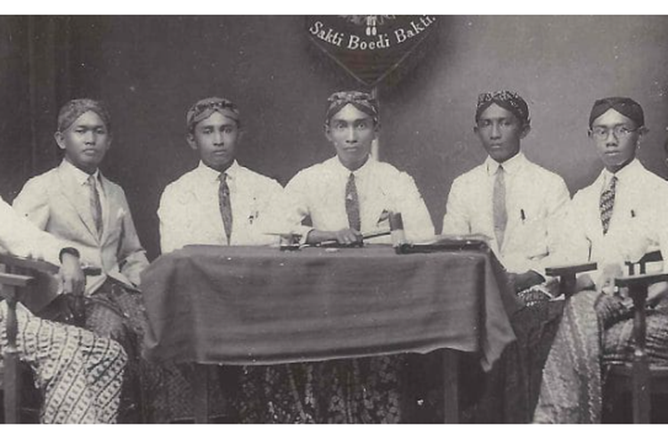

Latar Belakang
Sumpah Pemuda terjadi pada 28 Oktober 1928 dalam konteks perjuangan nasionalisme Indonesia yang sedang berkembang. Pada awal abad ke-20, kesadaran akan identitas nasional mulai tumbuh di kalangan para pemuda. Berbagai organisasi pemuda, seperti Jong Indonesisch Verbond, berdiri untuk memperjuangkan kemerdekaan dan menggalang persatuan di antara berbagai suku dan daerah. Penjajahan Belanda yang berlangsung lama menambah semangat perjuangan ini, mendorong pemuda untuk bersatu melawan penindasan dan memperjuangkan cita-cita kemerdekaan.
Peristiwa Sumpah Pemuda menjadi puncak dari upaya ini, di mana para pemuda dari berbagai daerah berkumpul di Jakarta untuk menyatakan komitmen mereka terhadap persatuan Indonesia. Dalam sumpah tersebut, mereka mengikrarkan satu tanah air, satu bangsa, dan satu bahasa, yaitu Indonesia. Sumpah ini tidak hanya simbol persatuan, tetapi juga menjadi tonggak penting dalam sejarah perjuangan kemerdekaan Indonesia, menegaskan bahwa meskipun berbeda latar belakang, mereka memiliki tujuan yang sama untuk mencapai kemerdekaan dari penjajahan.
Kongres Pemuda
Kongres Pemuda Kongres Pemuda pertama diadakan pada 30 April - 2 Mei 1926, yang bertujuan untuk memperkuat kerjasama di bidang sosial, ekonomi, dan budaya. Kongres Pemuda kedua dilaksanakan pada 27-28 Oktober 1928 di Batavia (sekarang Jakarta). Kongres ini dipimpin oleh Sugondo Joyopuspito dan menghasilkan ikrar yang dikenal sebagai Sumpah Pemuda

Isi Sumpah Pemuda
Sumpah Pemuda terdiri dari tiga poin utama:
- Kami putra dan putri Indonesia, mengaku bertumpah darah yang satu, tanah air Indonesia.
- Kami putra dan putri Indonesia, mengaku berbangsa yang satu, bangsa Indonesia.
- Kami putra dan putri Indonesia, menjunjung bahasa persatuan, bahasa Indonesia.